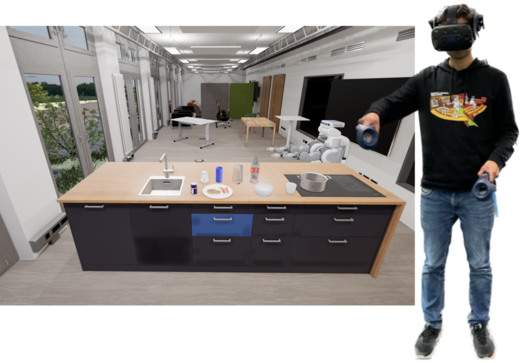

Human Robot Collaboration
Interactive Task Learning



Recent advancement in HRI has made it possible to develop several methodologies to actively support teaching robots to do complex tasks in dynamic environments. An interactive task learning system is an apprentice-style learning that puts an emphasis on multi-modal interaction scenarios between a human teacher and a robot student. We are currently looking into Natural Interaction Methods which provide various teaching modalities such as learning from demonstration, Learning from task-specific instructions, and Learning from feedback, where a robot student learns all or some aspect of the task.
© Designed by HTML Codex